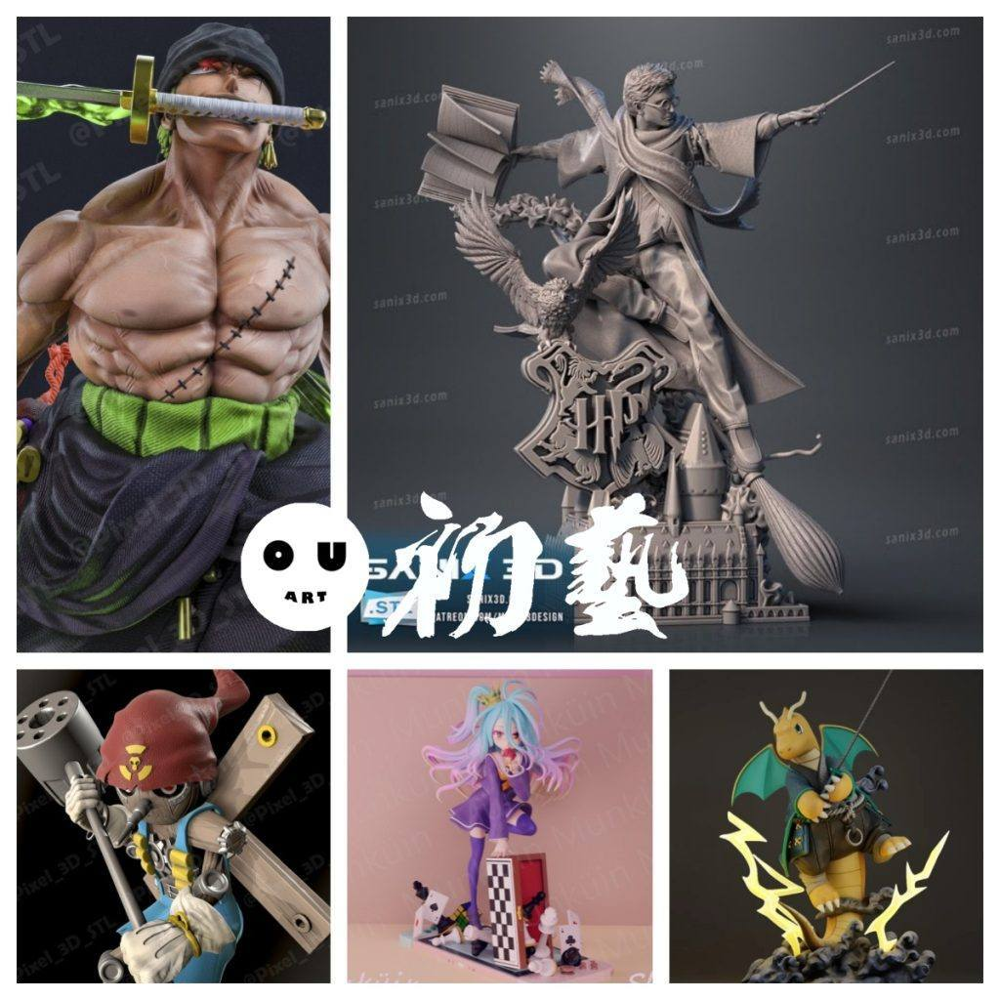
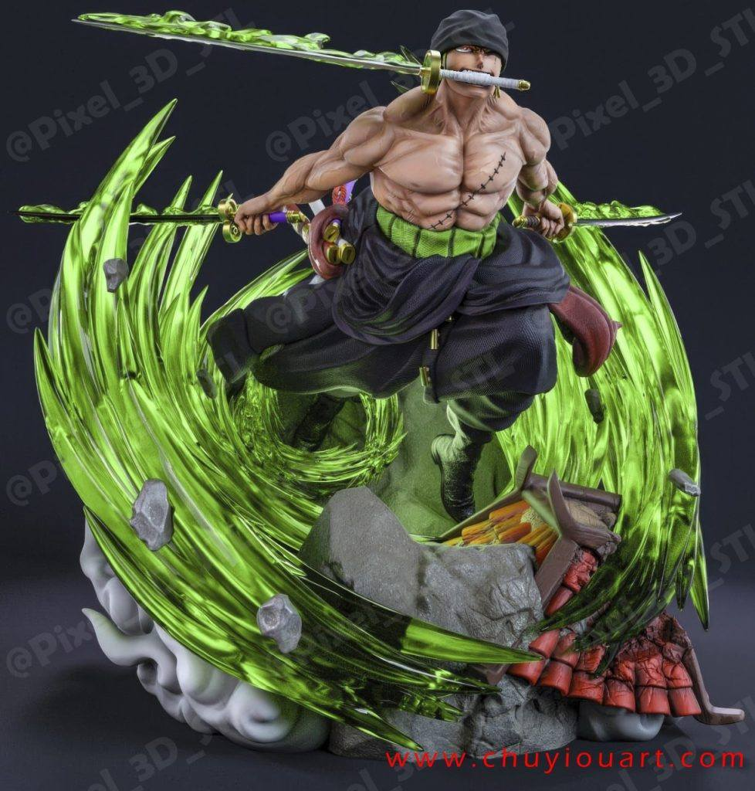
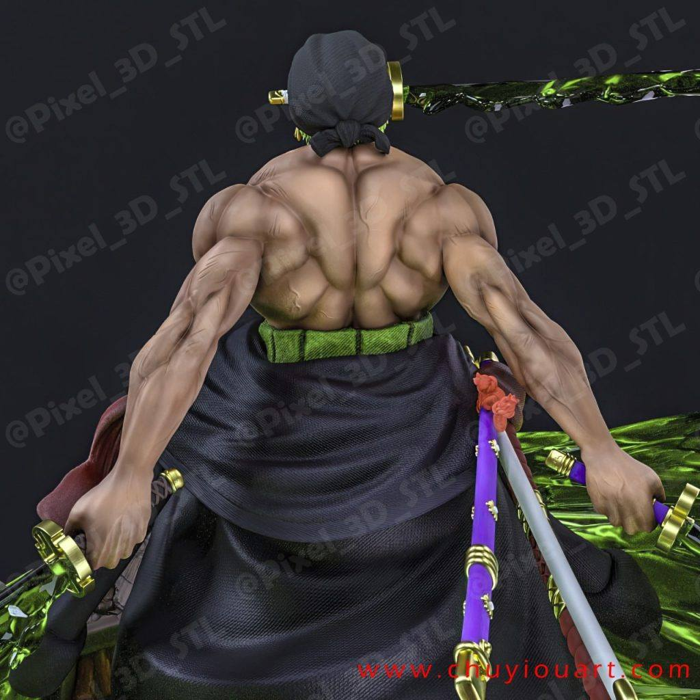
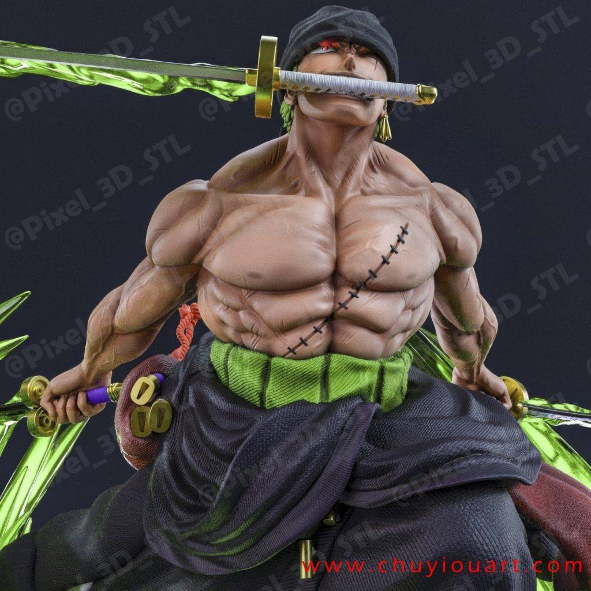
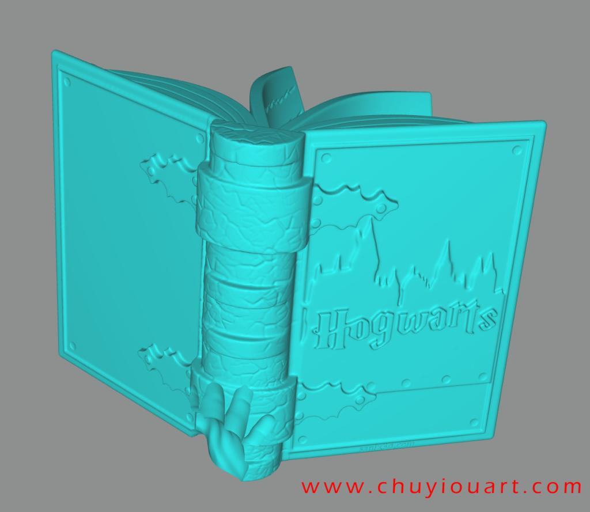
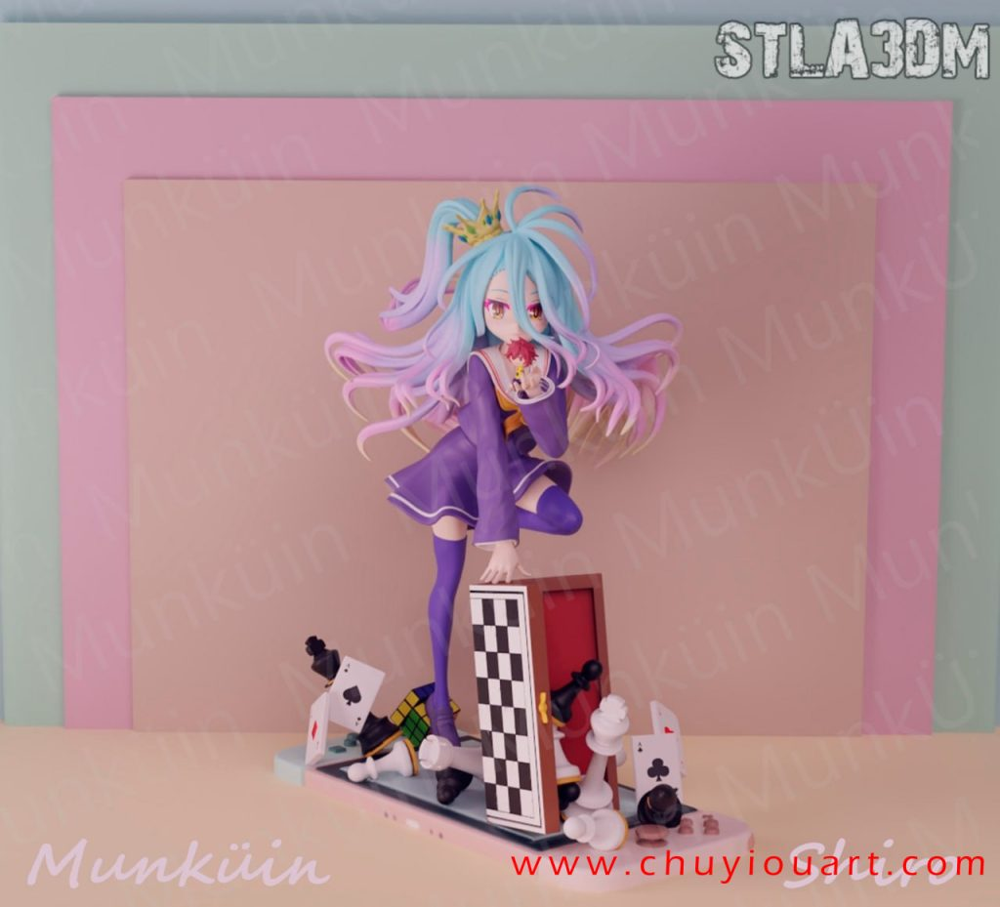
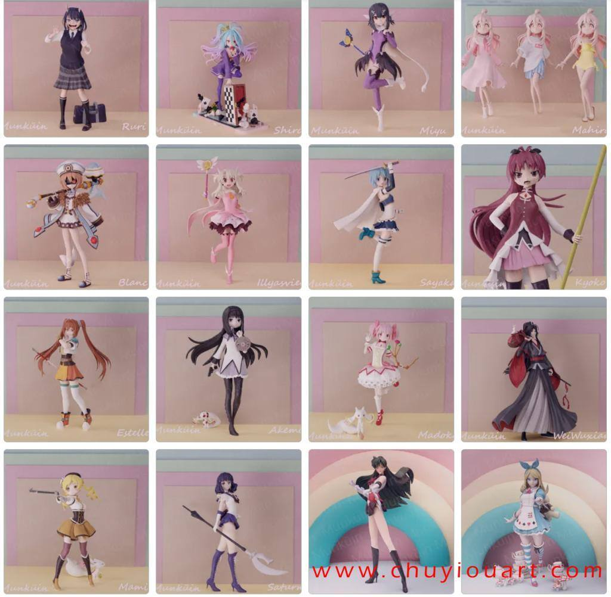
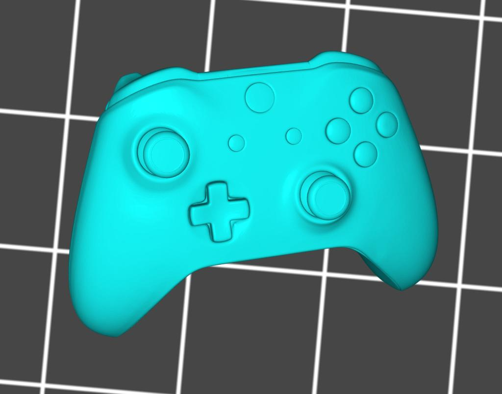
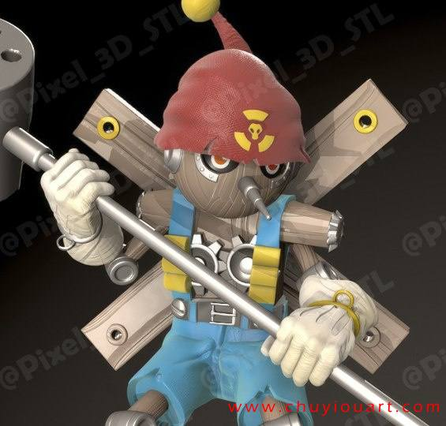
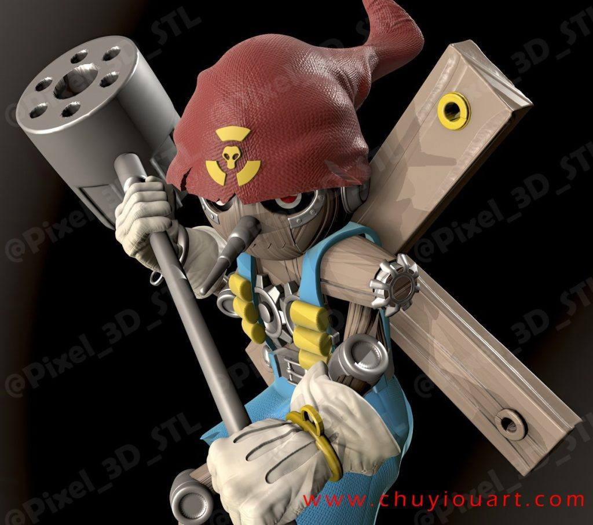

9月14日STl图纸文件分享
提取码
1qs7
1.索隆，三刀流造型，高模，素材自取
链接：https://pan.baidu.com/s/13wC6MPSsthDuPGtXdfpqrA
提取码：1qs7



2.哈利波特，很不错的素材，整体模型也很完整，有能力的朋友改改头雕，做1：6人偶非常不错，其他分件很详细。
链接：https://pan.baidu.com/s/1uAPIvv4L1ae9q4I_H-JWQg
提取码：d8r8



3.游戏人生——白， 白被她的父母抛弃，是个11岁的天才，Munkuin二次元系列的人物有很多，风格明显，这个场景的优势还是在场景配件。
链接：https://pan.baidu.com/s/1ARlz4ufTfUaMqud2WQjFdA
提取码：px1s





4.数码宝贝木偶兽，人气反派，这个版本细节好，配件大家自提，能组合搭配的场景很丰富。
链接：https://pan.baidu.com/s/1KRf8wOKztG1zZjoX7zoWxA
提取码：03ns




5.宝可梦——快龙，龙可以不要，但是闪电特效要拿下。
链接：https://pan.baidu.com/s/1lBtmI8_7O1vznc4fI1e1Fg
提取码：dbnd

以上内容仅供个人使用（非商用）
ONLY for PERSONAL (NON-COMMERCIAL) use.
加群获得更多免费模型！